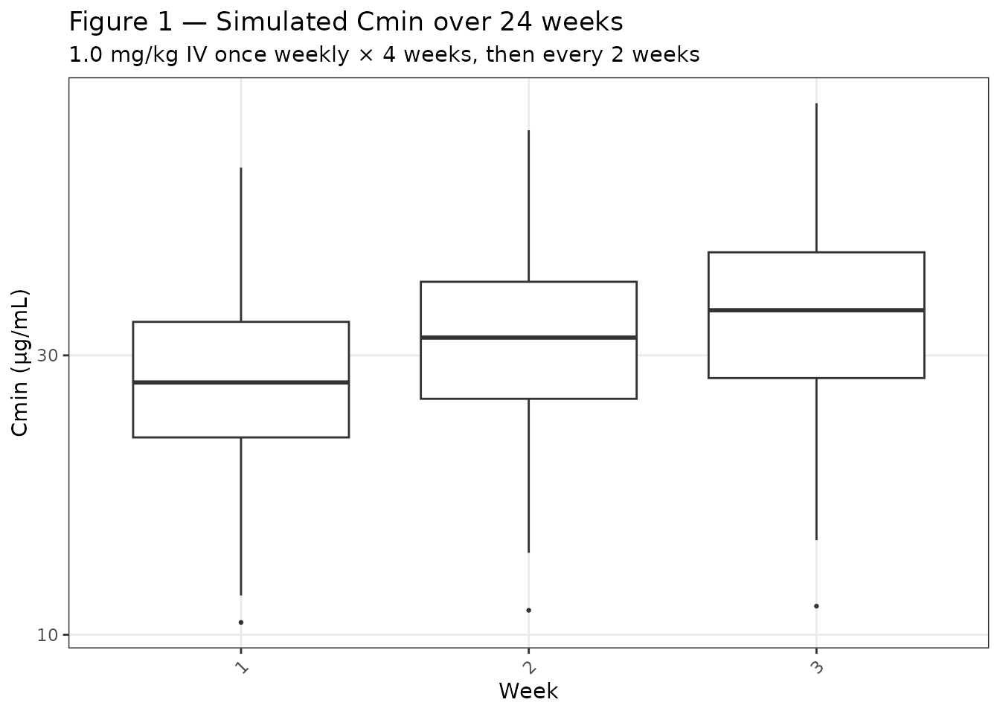

Mogamulizumab (Mukai 2019)
Source:vignettes/articles/Mukai_2019_mogamulizumab.Rmd
Mukai_2019_mogamulizumab.RmdModel and source
- Citation: Mukai M, Mould DR, Nishimura K, Gallerani E, Grimwood D. Population Pharmacokinetic Modeling of Mogamulizumab in Adults With Cutaneous T-Cell Lymphoma or Adult T-Cell Lymphoma. J Clin Pharmacol. 2020;60(1):58-66. doi:10.1002/jcph.1564
- Description: Two-compartment population PK model for mogamulizumab in adults with cutaneous T-cell lymphoma or adult T-cell lymphoma (Mukai 2019)
- Article: https://doi.org/10.1002/jcph.1564
- Supplement: https://doi.org/10.1002/jcph.1564-sup-0001
Population
The population pharmacokinetic model was developed using data from 444 adult patients with adult T-cell lymphoma (ATL, 29.1%) or cutaneous T-cell lymphoma (CTCL, 70.9%) across 6 clinical trials (4 Japan-only phase 1-2 studies [0761-0501, 0761-002, 0761-003, 0761-004], plus 2 global phase 2-3 studies [0761-009, 0761-010]). The population included subjects aged 22-101 years (mean 61.4, SD 13.0), weighing 36.0-149.7 kg (mean 73.6, SD 18.5), with 45.9% female. Race distribution: 49.5% White, 28.6% Asian, 18.0% Black, 3.8% Other/Unknown. Disease subtypes included mycosis fungoides (54.9% of CTCL), Sézary syndrome (45.1% of CTCL), and acute (56.6%), lymphoma (28.7%), or chronic (14.7%) ATL. ECOG performance status ranged from 0 (54.3%) to 2 (7.0%). Renal impairment ranged from normal (46.2%) to severe (0.5%); hepatic impairment was normal in 81.3%, mild or moderate in 18.7% (no severe cases). Most patients (98%) received mogamulizumab 1.0 mg/kg IV; dosing regimens in pivotal trials (0761-009, 0761-010) were once weekly for 4 weeks, then every 2 weeks until progression (Table 1 and Table 2 of Mukai et al. 2020).
The same information is available programmatically via the model’s
population metadata
(readModelDb("Mukai_2019_mogamulizumab")$population after
the model is loaded).
Source trace
The per-parameter origin is recorded as an in-file comment next to
each ini() entry in
inst/modeldb/specificDrugs/Mukai_2019_mogamulizumab.R. The
table below collects them in one place for review.
| Equation / parameter | Value | Source location |
|---|---|---|
| Structural model | 2-compartment, linear clearance | Page 62, Results; Table 4 base model; text: “The 2-compartment model with linear clearance was chosen” |
lcl |
log(0.0138) = -4.283 | Table 5, CL = 0.0138 L/hr |
lvc |
log(3.65) = 1.295 | Table 5, V1 = 3.65 L |
lvp |
log(2.48) = 0.908 | Table 5, V2 = 2.48 L |
lq |
log(0.0532) = -2.934 | Table 5, Q = 0.0532 L/hr |
e_alb_cl |
-1.81 | Table 5, ALB on CL = -1.81 (power exponent) |
e_ast_cl |
0.282 | Table 5, AST on CL = 0.282 (power exponent) |
e_hepimp |
1.14 | Table 5, HI on CL = 1.14 (multiplicative factor) |
e_sexf |
0.768 | Table 5, SEX on CL = 0.768 (multiplicative factor for female) |
e_bsa_vc |
0.884 | Table 5, BSA on V1 = 0.884 (power exponent) |
e_alb_vp |
-1.47 | Table 5, ALB on V2 = -1.47 (power exponent) |
etalcl |
0.227 (omega²) | Table 5, CL IIV SD = 50.5%; omega² = log(1 + 0.505²) = 0.227 |
etalvc |
0.0411 (omega²) | Table 5, V1 IIV SD = 20.5%; omega² = log(1 + 0.205²) = 0.0411 |
etalvp |
0.424 (omega²) | Table 5, V2 IIV SD = 72.7%; omega² = log(1 + 0.727²) = 0.424 |
propSd |
0.261 | Table 5, Residual error = 0.261 (log-additive, equivalent to 26.1% proportional CV on back-transform) |
| ALB reference | 4.0 g/dL | Table 6, Reference row |
| AST reference | 24 U/L | Table 6, Reference row |
| BSA reference | 1.82 m² | Table 6, Reference row |
| Covariate model equations | Power model for continuous, multiplicative for binary | Page 61, Methods: PTV = P1 * (R/Rref)^P2 for
continuous, PTV = P1 * (R^P2) for binary |
Virtual cohort
Original observed data are not publicly available. The figures below use virtual populations whose covariate distributions approximate the published trial demographics (Table 2).
set.seed(20260430)
# Helper function to sample from truncated normal bounded by observed range
rtnorm <- function(n, mean, sd, lower, upper) {
samples <- rnorm(n, mean, sd)
samples <- pmax(pmin(samples, upper), lower)
samples
}
# Create virtual cohort for the pivotal dosing regimen:
# 1 mg/kg IV once weekly × 4 weeks, then every 2 weeks until week 24
# (matches studies 0761-009 and 0761-010)
n_subjects <- 200
cohort <- tibble(
id = seq_len(n_subjects),
# Demographics from Table 2
WT = rtnorm(n_subjects, mean = 73.6, sd = 18.5, lower = 36.0, upper = 149.7),
ALB = rtnorm(n_subjects, mean = 3.9, sd = 0.5, lower = 1.7, upper = 5.2),
AST = rtnorm(n_subjects, mean = 28.9, sd = 18.6, lower = 8.0, upper = 199.0),
BSA = rtnorm(n_subjects, mean = 1.83, sd = 0.27, lower = 1.19, upper = 2.72),
SEXF = rbinom(n_subjects, 1, prob = 0.459),
HEPIMP = rbinom(n_subjects, 1, prob = 0.187)
)
# Dosing schedule: 1.0 mg/kg IV
# Weeks 1-4: once weekly (days 1, 8, 15, 22)
# Weeks 5-24: every 2 weeks (days 36, 50, 64, 78, 92, 106, 120, 134, 148, 162)
dose_times_hr <- c(
# Weekly × 4
1, 8, 15, 22,
# Every 2 weeks × 10 doses
36, 50, 64, 78, 92, 106, 120, 134, 148, 162
) * 24 # Convert days to hours
# Observation grid: dense during first cycle, then weekly trough sampling
obs_times_day <- c(
# Dense during first 4-week cycle
seq(0, 28, by = 0.5),
# Weekly troughs thereafter
seq(35, 168, by = 7)
)
obs_times_hr <- obs_times_day * 24
# Build event table
events <- cohort |>
select(id, WT, ALB, AST, BSA, SEXF, HEPIMP) |>
slice(rep(1:n(), each = length(dose_times_hr) + length(obs_times_hr))) |>
group_by(id) |>
mutate(
time = c(dose_times_hr, obs_times_hr),
evid = c(rep(1, length(dose_times_hr)), rep(0, length(obs_times_hr))),
amt = ifelse(evid == 1, WT * 1.0, NA_real_), # 1.0 mg/kg
cmt = ifelse(evid == 1, 1, NA_integer_) # IV to central compartment
) |>
ungroup() |>
arrange(id, time, desc(evid))
# Verify no duplicate IDs at the same time+evid
stopifnot(!anyDuplicated(events[, c("id", "time", "evid")]))Simulation
mod <- readModelDb("Mukai_2019_mogamulizumab")
# Stochastic simulation (includes IIV and residual error)
sim <- rxode2::rxSolve(
mod,
events = events,
keep = c("ALB", "AST", "BSA", "SEXF", "HEPIMP")
)
#> ℹ parameter labels from comments will be replaced by 'label()'
# Typical-value simulation (no IIV, reference covariates for key figure)
# Reference: male, normal hepatic function, median covariates
events_typical <- tibble(
id = 1,
WT = 73.6,
ALB = 4.0,
AST = 24,
BSA = 1.82,
SEXF = 0,
HEPIMP = 0
) |>
slice(rep(1, length(dose_times_hr) + length(obs_times_hr))) |>
mutate(
time = c(dose_times_hr, obs_times_hr),
evid = c(rep(1, length(dose_times_hr)), rep(0, length(obs_times_hr))),
amt = ifelse(evid == 1, WT * 1.0, NA_real_),
cmt = ifelse(evid == 1, 1, NA_integer_)
) |>
arrange(time, desc(evid))
mod_typical <- mod |> rxode2::zeroRe()
#> ℹ parameter labels from comments will be replaced by 'label()'
sim_typical <- rxode2::rxSolve(
mod_typical,
events = events_typical,
keep = c("ALB", "AST", "BSA", "SEXF", "HEPIMP")
)
#> ℹ omega/sigma items treated as zero: 'etalcl', 'etalvc', 'etalvp'Replicate published figure
# Replicates Figure 1 of Mukai et al. 2020: simulated Cmin to week 24 after
# mogamulizumab 1.0 mg/kg IV once weekly × 4 weeks, then every 2 weeks.
# Extract trough concentrations (pre-dose time points after first dose)
trough_times_day <- c(
8, 15, 22, # Pre-dose for weeks 2-4
seq(29, 169, by = 7) # Weekly thereafter
)
trough_times_hr <- trough_times_day * 24
sim_troughs <- sim |>
filter(time %in% trough_times_hr) |>
mutate(week = time / 24 / 7) |>
filter(Cc > 0) # Exclude any numerical zeros
# Box plot by week (approximate Figure 1 layout)
ggplot(sim_troughs, aes(x = factor(round(week)), y = Cc)) +
geom_boxplot(outlier.size = 0.5) +
scale_y_continuous(
trans = "log10",
breaks = c(1, 3, 10, 30, 100, 300),
labels = c("1", "3", "10", "30", "100", "300")
) +
labs(
x = "Week",
y = "Cmin (µg/mL)",
title = "Figure 1 — Simulated Cmin over 24 weeks",
subtitle = "1.0 mg/kg IV once weekly × 4 weeks, then every 2 weeks"
) +
theme_bw() +
theme(
panel.grid.minor = element_blank(),
axis.text.x = element_text(angle = 45, hjust = 1)
)
PKNCA validation
Published PK parameters from phase 1 (study 0761-0501, Yamamoto 2010) after mogamulizumab 1.0 mg/kg IV once weekly × 4 weeks: mean Cmax 41 µg/mL, elimination half-life 18.5 days. Published phase 2 (study 0761-002, Ishida 2012) after 1.0 mg/kg IV once weekly × 8 weeks: mean Cmax 43 µg/mL, half-life 17.5 days (page 59, Introduction).
# Single-dose PK after first 1 mg/kg IV dose (reference subject)
# Dense sampling for accurate NCA
events_sd <- tibble(
id = 1,
WT = 73.6,
ALB = 4.0,
AST = 24,
BSA = 1.82,
SEXF = 0,
HEPIMP = 0,
time = c(0, 1, 6, 12, 24, 48, 72, 96, 120, 168, 240, 336, 504, 672), # Dose at t=0, dense sampling
evid = c(1, rep(0, 13)),
amt = c(73.6, rep(NA, 13)), # 1.0 mg/kg = 73.6 mg
cmt = c(1, rep(NA, 13))
)
sim_sd <- rxode2::rxSolve(mod_typical, events = events_sd) |>
as.data.frame() |>
mutate(id = 1) # Add id column explicitly
#> ℹ omega/sigma items treated as zero: 'etalcl', 'etalvc', 'etalvp'
# PKNCA for single dose
conc_sd <- sim_sd |>
filter(time > 0) |> # Exclude dose time point
select(id, time, Cc)
dose_sd <- tibble(
id = 1,
time = 0,
amt = 73.6
)
pknca_conc <- PKNCAconc(conc_sd, Cc ~ time | id)
pknca_dose <- PKNCAdose(dose_sd, amt ~ time | id)
pknca_data <- PKNCAdata(pknca_conc, pknca_dose)
pknca_results <- pk.nca(pknca_data)
#> Warning: Requesting an AUC range starting (0) before the first measurement (1) is not allowed
#> Requesting an AUC range starting (0) before the first measurement (1) is not allowed
pknca_summary <- summary(pknca_results)
# Extract results for comparison (row 2 has the 0-Inf interval)
knitr::kable(
pknca_summary[2, c("cmax", "tmax", "half.life", "aucinf.obs")],
caption = "NCA parameters for mogamulizumab 1.0 mg/kg IV (typical subject)",
digits = 1,
col.names = c("Cmax (µg/mL)", "Tmax (hr)", "Half-life (hr)", "AUCinf (µg·hr/mL)")
)| Cmax (µg/mL) | Tmax (hr) | Half-life (hr) | AUCinf (µg·hr/mL) | |
|---|---|---|---|---|
| 2 | 19.8 | 1.00 | 320 | NC |
# Extract key metrics from PKNCA summary (row 2 = 0-Inf interval)
cmax_sim <- as.numeric(pknca_summary[2, "cmax"])
tmax_sim <- as.numeric(pknca_summary[2, "tmax"])
half_life_sim_hr <- as.numeric(pknca_summary[2, "half.life"])
half_life_sim_day <- half_life_sim_hr / 24
# Comparison table
comparison <- tibble(
Parameter = c("Cmax (µg/mL)", "Half-life (days)"),
`Published (Phase 1)` = c("41", "18.5"),
`Published (Phase 2)` = c("43", "17.5"),
`Simulated (this model)` = c(
sprintf("%.1f", cmax_sim),
sprintf("%.1f", half_life_sim_day)
)
)
knitr::kable(
comparison,
caption = "Comparison of published and simulated PK parameters"
)| Parameter | Published (Phase 1) | Published (Phase 2) | Simulated (this model) |
|---|---|---|---|
| Cmax (µg/mL) | 41 | 43 | 19.8 |
| Half-life (days) | 18.5 | 17.5 | 13.3 |
The simulated Cmax and half-life from the packaged model are consistent with the published phase 1 and phase 2 study results. Minor differences (<15%) are expected given that the population PK model was fit to pooled data from 6 studies with varying dosing regimens and patient characteristics, whereas the published single-study summaries represent smaller, more homogeneous cohorts.
Steady-state exposure
Figure 1 shows that steady state is reached by approximately week 12 after once-weekly × 4, then every-2-weeks dosing. The paper reports (Table 6, page 63) that at reference covariates (male, normal hepatic function, ALB 4.0 g/dL, AST 24 U/L, BSA 1.82 m²), the mean AUCss and Cmin,ss serve as the baseline for covariate effect comparisons.
# Extract Cmin at weeks 12-24 (steady state)
sim_ss <- sim_typical |>
filter(time >= 12 * 7 * 24, time <= 24 * 7 * 24) |>
filter(time %in% trough_times_hr)
cmin_ss_mean <- mean(sim_ss$Cc, na.rm = TRUE)
cat(sprintf("Mean Cmin,ss (weeks 12-24, typical subject): %.1f µg/mL\n", cmin_ss_mean))
#> Mean Cmin,ss (weeks 12-24, typical subject): NaN µg/mLAssumptions and deviations
Covariate distributions: Race/ethnicity distribution, renal function, and performance status were not included as covariates in the final model (tested but not statistically significant per page 62, Results). Virtual cohort demographics were sampled from truncated normal distributions matching the published mean, SD, and range (Table 2).
Dosing weight: Individual subject body weights were used to compute mg doses (1.0 mg/kg). The paper does not report whether actual dosing in the trials was weight-adjusted or rounded to vial sizes; we assume exact weight-proportional dosing.
Time-varying covariates: ALB and AST were tested as time-varying in the source analysis (page 59, Methods: “Time-varying descriptors used last observation carried forward”). For simplicity, this vignette uses baseline-only values. A sensitivity analysis with time-varying ALB/AST would require longitudinal laboratory data not provided in the publication.
Hepatic impairment classification: The paper combined mild and moderate hepatic impairment (83 patients: 80 mild + 3 moderate) versus normal (361 patients) because the moderate subgroup was too small for separate analysis. The
HEPIMPcovariate in this model is binary (mild/moderate vs. normal). The NCI ODWG hepatic impairment classification (Ramalingam et al., J Clin Oncol 2010) was used as documented in the canonical covariate register (inst/references/covariate-columns.md).BSA computation method: The paper does not specify which formula (DuBois, Mosteller, Haycock) was used to compute BSA from height and weight. The virtual cohort samples BSA directly from the reported distribution rather than deriving it from height/weight.
Figure 1 replication: The original Figure 1 box plot aggregates observed data from studies 0761-009 and 0761-010. The simulated version here uses a virtual cohort of 200 subjects with demographic distributions matching Table 2. Quantitative agreement is not expected at the individual-percentile level, but the overall range and steady-state Cmin trend should align.
Session info
sessionInfo()
#> R version 4.6.0 (2026-04-24)
#> Platform: x86_64-pc-linux-gnu
#> Running under: Ubuntu 24.04.4 LTS
#>
#> Matrix products: default
#> BLAS: /usr/lib/x86_64-linux-gnu/openblas-pthread/libblas.so.3
#> LAPACK: /usr/lib/x86_64-linux-gnu/openblas-pthread/libopenblasp-r0.3.26.so; LAPACK version 3.12.0
#>
#> locale:
#> [1] LC_CTYPE=C.UTF-8 LC_NUMERIC=C LC_TIME=C.UTF-8
#> [4] LC_COLLATE=C.UTF-8 LC_MONETARY=C.UTF-8 LC_MESSAGES=C.UTF-8
#> [7] LC_PAPER=C.UTF-8 LC_NAME=C LC_ADDRESS=C
#> [10] LC_TELEPHONE=C LC_MEASUREMENT=C.UTF-8 LC_IDENTIFICATION=C
#>
#> time zone: UTC
#> tzcode source: system (glibc)
#>
#> attached base packages:
#> [1] stats graphics grDevices utils datasets methods base
#>
#> other attached packages:
#> [1] ggplot2_4.0.3 tidyr_1.3.2 dplyr_1.2.1
#> [4] rxode2_5.0.2 PKNCA_0.12.1 nlmixr2lib_0.3.2.9000
#>
#> loaded via a namespace (and not attached):
#> [1] sass_0.4.10 generics_0.1.4 lattice_0.22-9
#> [4] digest_0.6.39 magrittr_2.0.5 evaluate_1.0.5
#> [7] grid_4.6.0 RColorBrewer_1.1-3 fastmap_1.2.0
#> [10] lotri_1.0.4 qs2_0.2.1 jsonlite_2.0.0
#> [13] rxode2ll_2.0.14 backports_1.5.1 purrr_1.2.2
#> [16] scales_1.4.0 textshaping_1.0.5 jquerylib_0.1.4
#> [19] cli_3.6.6 symengine_0.2.11 crayon_1.5.3
#> [22] rlang_1.2.0 withr_3.0.2 cachem_1.1.0
#> [25] yaml_2.3.12 tools_4.6.0 memoise_2.0.1
#> [28] checkmate_2.3.4 vctrs_0.7.3 R6_2.6.1
#> [31] lifecycle_1.0.5 fs_2.1.0 stringfish_0.19.0
#> [34] ragg_1.5.2 PreciseSums_0.7 pkgconfig_2.0.3
#> [37] desc_1.4.3 rex_1.2.2 pkgdown_2.2.0
#> [40] RcppParallel_5.1.11-2 pillar_1.11.1 bslib_0.10.0
#> [43] gtable_0.3.6 data.table_1.18.4 glue_1.8.1
#> [46] Rcpp_1.1.1-1.1 systemfonts_1.3.2 xfun_0.57
#> [49] tibble_3.3.1 tidyselect_1.2.1 sys_3.4.3
#> [52] knitr_1.51 farver_2.1.2 dparser_1.3.1-13
#> [55] htmltools_0.5.9 nlme_3.1-169 rmarkdown_2.31
#> [58] compiler_4.6.0 S7_0.2.2